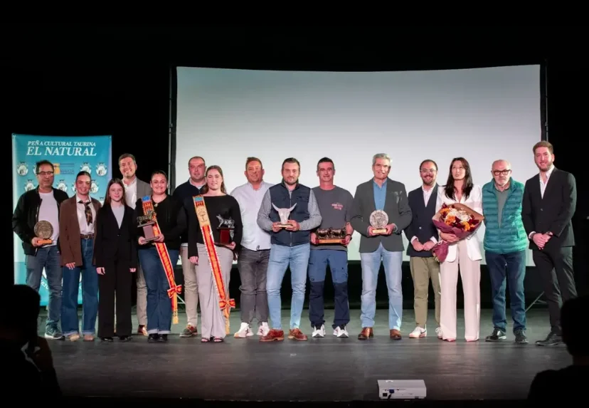

Agenda Taurina
Agenda TaurinaNilotico, de Torreherberos, y Pardillo, de Juan Pedro Domecq, mejores toros de 2026 en La Vall d'Uixó
La Peña Cultural Taurina El Natural cerró su XXVII Semana Cultural Taurina con la Gala Final de Temporada y la 46.ª entrega de premios a los mejores toros de la ciudad

El domingo 15 de noviembre, la Penya Cultural Taurina El Natural celebró su tradicional Gala Final de Temporada, presentada por Vanesa Santos, como broche de su XXVII Semana Cultural Taurina. Fue la 46.ª edición de la entrega de premios a los mejores toros de La Vall d'Uixó.
🐂 Mejores toros de 2026
- Toro mejor presentado: Nilotico, n.º 8, de la ganadería TORREHERBEROS. Se exhibió el 17 de octubre en las fiestas del Santísimo Cristo del Calvario.
- Toro de mejor juego: Pardillo, n.º 40, de la ganadería JUAN PEDRO DOMECQ. Se exhibió el 10 de octubre en las fiestas patronales de la Sagrada Familia y Santísimo Cristo.
🐄 Animales autóctonos
- Mejor animal de corro: Conformista, n.º 46, de la ganadería HERMANOS CALÍ. Se exhibió el 22 de junio en las fiestas de Sant Joan, a cargo de la Penya Palitroque.
- Mejor corro de la temporada: HERMANOS MONFERRER, exhibido el 5 de julio en las fiestas de San Fermín, a cargo de Paredes Grup.
🏅 Trofeo Francisco Aymimir
Este año fue para los ganaderos Luis Alcón y Juan Bautista Giménez «El Solivo», afectados por los incendios de 2026, como reconocimiento a su esfuerzo, su dedicación y su capacidad de superación.
Otros reconocimientos
- Francisco Diago, por su trayectoria, en un premio patrocinado por Punt 3 Televisión.
- Vicente, socio de la peña, por su vinculación con El Natural y su afición, en uno de los momentos más emotivos de la noche.
- IV Encuentro de Tauromaquias Populares: la peña recibió a representantes de Coria (Cáceres).
- Se proyectó un resumen de la temporada en imágenes, realizado por Eloy Castillejo, de Punt 3 Televisión.
Para ver los festejos que quedan esta temporada, consulta el calendario de Agenda Taurina.
Fuente: @elnatural_pct (Penya Cultural Taurina El Natural, Instagram).
Ver el calendario completo Ver todas las noticias